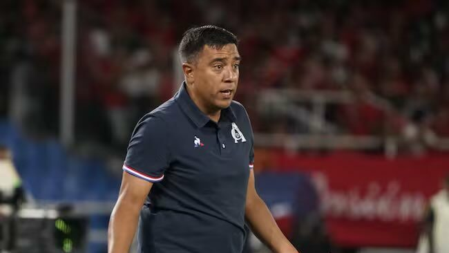
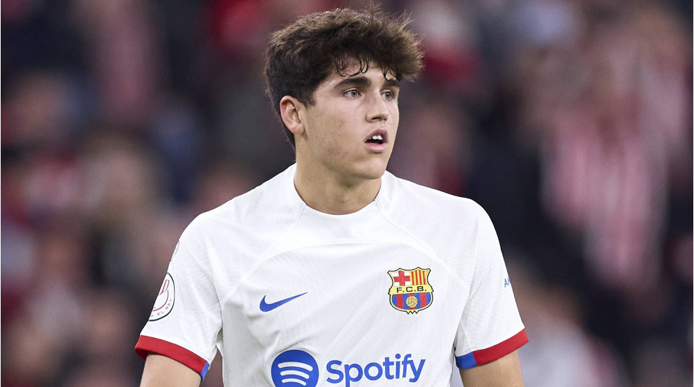

bienvenida
Hola, Bienvenidos a MataCenteno tu sitio web del fútbol
mundial.
Espero que tu visita a ésta plataforma sea de lo más
placentera y
quiero que sepas que siempre seras bienvenido
#7FFFD4

Noticias
Farias pone su cargo a la orden
Haalland da una posibilidad de ir al Madrid

Messi podria jugar la Copa Intercontinental de la FIFA

La vinotinto sub20 pierde contra Costa Rica


Partidos para la semana del 13 y 14/02/2024 y
semana del 20 y 21/02/2024
Resultados de partidos de ida del Martes 13/02:
- RB Leipzig 0 vs Real Madrid CF 1
- FC Copenhague 1 vs Manchester City FC 3
Resultados de los partidos de ida del Miercoles 14/02:
- Lazio 1 vs Bayern Munich 0
- PSG FC 2 vs Real Sociedad 0
Resultados de los partidos de ida de octavos del martes 20/02/2024:
- PSV Eindhoven 1 vs Borussia Dortmund 1
- Inter Milan 1 vs Atletico de Madrid 0
Resultados de los partidos de ida de octavos del miercoles 21/02/2024:
- SSC Napoles 1 vs FC Barcelona 1
- FC Oporto 1 vs Arsenal 0
Resulatdos de los partidos de vuelta de octavos de final para el martes 05/03/2024
- Bayern Munich 3 vs 0 Lazio
- Real Sociedad 1 vs 2 PSG
Resultados de los partidos de vuelta de octavos de final para el miercoles 06/03/2024
- Real Madrid CF 1 vs 1 RB Leipzig
- Manchester City FC 3 vs 1 FC Copenhague
Resultados de los partidos de vuelta de octavos para el martes 12/03/2024:
- Arsenal 1 (4)vs(3) 0 Porto
- Barcelona 3 vs 1 Napoli
Partidos de vuelta de octavos para el miercoles 13/03/2024:
- Borussia Dortmund vs PSV 16:00 hora venezolana
- Atletico de Madrid vs Inter de Milan 16:00 hora venezolana
Partido de Champions del martes 12/03/2024:
Barcelona vs Napoli, partidazo del equipo cule. La primera media hora de partido fue del Barca que con un ataque comandado por Jamal, Fermin, Raphiña y Joao Cancelo se ponia 2 a 0 el partido. El Barcelona fue claro dominador del encuentro en el primer tiempo, fue avasallante el ataque blaugrana y con la aficion acompañando al equipo. Luego el Napoles empata el partido ya casi para terminar el primer tiempo y deja con un sabor no muy dulce a la aficion cule. En el segundo tiempo el Napoles por instantes metio atras al Barcelona, pero con unos cambios en la medular, colocando a Sergi Roberto y a Romeu, le daba frescura al medio campo y con pases largos y precisos de Cubarsi, el Barcelona volvia al ataque y con una jugada por la izquierda con Joao Cancelo que se la pasa a Gundogan y este pone un pase en profundidad a Sergi y este le da un toque a Lewa y este que solo empuja el balon y adentro, Barcelona 3 Napoles 1 y eso fue todo para el Napoles. El Barcelona siguio atacando y bueno la aficion estaba que se salia de la alegria. En resumen, un gran Barca, con un gran Cubarsi, gran Lamine Yamal, gran Joao Cancelo y grande Raphiña y bueno todo el equipo blaugrana estuvieron fenomenal. Ahora con este equipo jugando de esta manera, no podemos dejar que Xavi se vaya, pienso que sigue siendo el mas idoneo para dirigir este plantel. Todas las malas actuaciones que ha tenido el equipo se han debido a las lesiones de jugadores titulares del Barcelona y pienso que el que apesar de los lesionados, el Barca pase a cuartos es una gran victoria que tiene pegado el nombre de Xavi Hernandez
Partido de Champions del miercoles 06/03/2024:
Real Madrid vs RB Leipzig, todo un partido para el olvido para el Madrid. El Real estaba cumpliendo 122 años de aniversario y que mal lo paso contra los alemanes. Era un Madrid incomodo, los jugadores no conectaban, Vinicius no tenia ningun efecto sobre el Leipzig. Las mejores oportunidades de gol las tuvo el equipo aleman pero no concretaban, hasta que llego el Madrid y con una buena corrida de Bellingham, luego este se la paso a Vinicius que no perdono y el partido se puso 1 a 0, arriba el Madrid que sin merecerlo estaba ganando, pero la alegria les iba a durar poco ya que el Leipzig empato a los 2 minutos. Los alemanes pisaban el area madrileña, pienso que les falto un poco mas de fe en si mismos, pero todo estaba servido para dar un golpe sobre la mesa por parte del equipo aleman. Decir que Vinicius estuvo de mas en el partido ya que le debieron haber sacado tarjeta roja por el empujon que le dio al jugador aleman y de esta manera el Madrid no hubiese empatado el partido. Un Madrid desconocido, lo unico que estuvo bien en el equipo merengue fue Rodrigo que entro en el segundo tiempo y dio bastante dinamica al ataque

Europa League

En este mes de febrero se jugaran los partidos de play offs, donde
se enfrentaran los 8 equipos que quedaron de subcampeones de cada
grupo de la fase de grupos de esta competicion contra los 8
equipos que quedaron terceros en la fase de grupos de la Champions
de esta temporada
Como goleador de la competicion tenemos a Joao Pedro del Brighton
con 6 goles y como mejor asistidor a Kostas Fortounis del Olympiakos
con 6 asistencias
Los resultados de los partidos de ida de Play Offs de este jueves 15/02 son los siguientes:
- FC Shakhtar Donetsk 2 vs Olympique Marsella 2
- Young Boys 1 vs Sporting Portugal 3
- Galatasary SK 3 vs AC Sparta Praga 2
- Feyenoord Rotterdam 1 vs AS Roma 1
- SC Braga 2 vs Qarabag FK 4
- AC Milan 3 vs FC Stade Rennes 0
- RC Lens 0 vs SC Friburgo 0
- Benfica 2 vs Toulouse FC 1
Resultados de los partidos de Playoffs del jueves 22/02
- Qarabag FK 2 vs SC Braga 3
- SC Friburgo 3 vs RC Lens 2
- Toulouse FC 0 vs Benfica 0
- FC Stade Rennes 3 vs AC Milan 2
- Olympique Marsella 3 vs FC Shakhtar Donetsk 1
- Sporting Portugal 1 vs Young Boys 1
- AC Sparta Praga 4 vs Galatasary SK 1
- AS Roma 1 (4) vs Feyenoord Rotterdam 1 (2)
Total de equipos que van a octavos en la Europa League:
- Westham, Brighton, Rangers, Atalanta, Liverpool, Villarreal, Slavia Praga, Bayern Leverkusen
- Milan, Friburgo, Benfica, Qarabaq, Marsella, Sporting CP, Sparta de Praga, Roma
Fecha de sorteo de los octavos de final de la Europa League:
El sorteo para octavos de final de esta temporada sera este viernes 23/02 en Suiza
aproximadamente a las 7:00 de la mañana hora venezolana
Resultados de los partidos de octavos de final de la Europa League 23/24 de este jueves 07/03/2024:
- SP Portugal 1 vs 1 Atalanta
- FK Qarabag 2 vs 2 Bayern Leverkusen
- Roma 4 vs 0 Brighton
- S. Praga 1 vs 5 Liverpool
- Benfica 2 vs 2 Rangers
- Marsella 4 vs 0 Villarreal
- Milan 4 vs 2 Slavia P.
- Friburgo 1 vs 0 West Ham
Partidos de vuelta de octavos para este jueves 14/03/2024:
- Slavia Praga vs Milan 13:45 hora venezolana
- West Ham vs Friburgo 13:45 hora venezolana
- Villarreal vs Marsella 13:45 hora venezolana
- Rangers vs Benfica 13:45 hora venezolana
- Atalanta vs SP Portugal 16:00 hora venezolana
- Bayern Leverkusen vs FK Qarabaq 16:00 hora venezolana
- Brighton vs AS Roma 16:00 hora venezolana
- Liverpool vs S. Praga 16:00 hora venezolana
Opinion
Liverpool vs Manchester City, partido estelar de este fin de semana, mas especificamente domingo 10 de marzo a las 11 y media hora venezolana. Partido estelar no solo por la situacion en la tabla de clasificacion de los dos equipos, sino que este partdio es especial porque es el ultimo partido en premier entre Klopp y Guardiola. Arrancaba el partido y los dos equipos peleaban por la posesion y el dominio del encuentro, hasta que llego el gol de pelota parada del central del City, Stones. 1 a 0, City arriba. Pero los de Liverpool comenzaron a presionar la salida del City y a hacer buenos pases hasta que llego en el segundo tiempo un penal a favor de los Reds, cobrado por Mac Alister y se empataba el encuentro. Luego ingresaba Salah y los de Merseiside le pusieron mas dinamica al ataque con jugadores como Lucho Diaz y Mac Alister como puntos altos en el ataque Red, hasta hubo polemica ya que no cantaron penal a favor del Liverpool en una falta que le hicieron a Mac Alister y bueno los del Var se hicieron los ciegos. Merecio ganarlo el Liverpool ya que metio atras al City y tuvo unas oportunidades muy claras, pero bueno han empatado y ahora el Arsenal es el lider de la tabla de clasificacion de la premier empatados en puntos con el Liverpool y un punto mas que el City, asi que la premier se pone muy buena, mejor que antes.

Copa Libertadores

Resultados de los partidos de la fase preliminar para este martes 05/03/2024:
- Nacional 0 vs 2 Palestino
Resultados de los partidos de la fase preliminar para este miercoles 06/03/2024:
- Botafogo 2 vs 1 Bragantino
- Sportivo Trinidense 1 vs 1 Colo Colo
Resultados de los partidos de la fase preliminar para este jueves 07/03/2024:
- Always Ready 1 vs 0 Nacional de Uruguay
La fase de grupos de la Conmebol Libertadores comenzara en la semana del miercoles 03/04/2024
Sudamericana

Resultados de los partidos de fase preliminar para este martes 05/03/2024:
- U. Catolica 0 vs 2 Coquimbo Unido
- Real Tomayapo 0(4)vs 0(3)Wilstermann
- Deportivo Garcilaso 0(4) vs 0(3) ADT
- Carabobo 1(4) vs 1(5) Metropolitanos FC
- Tolima 0(2) vs 0(4) Medellin
Resultados de los partidos de la fase preliminar para este miercoles 06/03/2024:
- Universitario de Vinto 0 vs 2 Nacional Potosi
- Everton 0 vs 1 U. La Calera
- Dep. Cuenca 2 vs 5 Delfin
- Wanderers 0 vs 1 Danubio
- Guarani 0 vs 1 Sportivo Luqueño
- Alianza Petrolera 2 vs 1 America
Resultados de los partidos de la fase preliminar para este jueves 07/03/2024:
- Racing 2 vs 0 Cerro Largo
- Rayo Zuliano 0(4) vs 0(2) Dep. La Guaira
- Cesar Vallejo 2 vs 0 Sport Huancayo
- Sportivo Ameliano 2 vs 0 Olimpia
- Tecnico Universitario 0 vs 3 U. Catolica
La fase de grupos de la Conmebol Sudamericana 2024 comenzara el 03/04/2024
Partido: Carabobo vs Metropolitanos
Partido de mucha intensidad ya que se jugaba el pase a fase de grupos de la Sudamericana A los 7 minutos del primer tiempo, Metropolitanos se iba arriba 1 a 0 con un golazo de Charlis Ortiz, quien despues de un pase largo burla a los centrales granate y mete el unico gol de Metropolitanos en el partido. Fue muy interrumpido por faltas y fueras de juego y saques de banda pero de mucha intensidad. Carabobo iba ganando protagonismo en el partido hasta que en el segundo tiempo, Graterol coge el balon con las manos para que el Carabobo no anotara y fue expulsado y penal para el granate. 1 a 1 se empataba el encuentro, que a pesar de que Metropolitanos tenia un jugador menos, se fue al ataque y con cambios de ultimo minuto llego a tener sus oportunidades y encerro a los Carabobeños en su area. Luego nos fuimos a los penales, donde Billete, portero de Metropolitanos, atajo el penal de Apaloza, para que el jugador de Metropolitanos metiera el quinto penal y los capitalinos se quedaban con la victoria y van directos a la fase de grupos cuyo sorteo es el lunes 18 de marzo
Partidos
Partidos del viernes 08/03/2024
Hora 15:45 hora venezolana: Napoli vs Torino
Hora 16:00 hora venezolana: FC Barcelona vs Mallorca
Hora 18:00 hora venezolana: Deportivo Tachira vs Academia Puerto Cabello
Hora 19:00 hora venezolana: Portuguesa vsMonagas
Hora 15:30 hora venezolana: Stuttgart vs Union Berlin
Partidos del Sabado 09/03/2024
Hora 8:30 hora venezolana: Manchester United vs Everton
Hora 11:00 hora venezolana: Crystal Palace vs Luton Town
Hora 11:00 hora venezolana: Wolverhampton Wanderers vs FC Fulham
Hora 13:30 hora venezolana: FC Arsenal vs Brentford FC
Hora 9:00 hora venezolana: Valencia vs Getafe
Hora 11:15 hora venezolana: Cadiz CF vs Atletico de Madrid
Hora 13:30 hora venezolana: Granada vs Real Sociedad
Hora 16:00 hora venezolana: Girona vs Osasuna
Hora 13:00 hora venezolana: Bologna vs Inter de Milan
Hora 10:30 hora venezolana: Bayern Munich vs Mainz
Hora 10:30 hora venezolana: RB Leipzig vs Darmstad
Hora 13:30 hora venezolana: Werder Bremen vs Borussia Dortmund
Hora 15:00 hora venezolana: Estudiantes de Merida vs Inter
Hora 18:00 hora venezolana: Carabobo vs UCV
Hora 18:00 hora venezolana: Zamora vs Caracas
Partidos del Domingo 10/03/2024
Hora 9:00 hora venezolana: Aston Villa vs Tottenham Hotspur
Hora 11:45 hora venezolana: Liverpool vs Manchester City
Hora 11:15 hora venezolana: Las Palmas vs Athletic Club
Hora 13:30 hora venezolana: Real Madrid vs Celta de Vigo
Hora 16:00 hora venezolana: Real Betis vs Villarreal
Hora 10:00 hora venezolana: Milan vs Empoli
Hora 13:30 hora venezolana: Juventus vs Atalanta
Hora 15:45 hora venezolana: Fiorentina vs AS Roma
Hora 12:30 hora venezolana: Eintracht Frankfurt vs Hoffenheim
Hora 14:30 hora venezolana: Bayern Leverkusen vs Wolfsburgo
Hora 8:00 hora venezolana: PSG vs Reims
Hora 12:05 hora venezolana: Lile vs Rennes
Hora 15:45 hora venezolana: Marsella vs Nantes
Hora 15:00 hora venezolana: Rayo Zuliano vs Angostura
Hora 19:00 hora venezolana: Dep. La Guaira vs Metropolitanos
Partidos del lunes 11/03/2024
Hora 16:00 hora venezolana: Chelsea vs Newcastle United
Hora 16:00 hora venezolana: Almeria vs Sevilla
Hora 15:45 hora venezolana: Lazio vs Udinese
Partidos del martes 27/02/2024
Hora 15:45 hora venezolana: Blackburn Rovers vs Newcastle United
Hora 16:00 hora venezolana: Luton town vs Manchester City
Hora 18:00 hora venezolana: Palestino vs Portuguesa
Hora 16:30 hora venezolana: Real Sociedad vs Mallorca
Hora 15:45 hora venezolana: Olympique Lyonnais vs Estrasburgo
Partidos del miercoles 28/02/2024
Hora 13:00 hora venezolana: Sassuolo vs Napoli
Hora 15:45 hora venezolana: Inter de Milan vs Atalanta
Hora 15:30 hora venezolana: Chelsea vs Leeds United
Hora 15:45 hora venezolana: Wolverhampton Wanderers vs Brighton & Hove Albion FC
Hora 15:45 hora venezolana: Nottingham Forest vs Manchester United
Hora 16:00 hora venezolana: Liverpool vs Southampton
Hora 18:00 hora venezolana: Club Nacional de Football vs Academia Puerto Cabello
Partidos del jueves 29/02/2024
Hora 20:30 hora venezolana: Fluminense vs LDU Quito
Hora 16:30 hora venezolana: Athletic Club vs Atletico de Madrid
En la lupa

Para inaugurar esta seccion tendremos a un jugador que me ha impresionado con su juego y esta ahora mismo en boca de todos y ese es Pau Cubarsi. Central, normalmente juega en la izquierda, nacido en enero del 2007, es decir ya cumplio los 17. Es internacional con la seleccion española sub17. En el Barcelona desde diciembre del 2023 esta siendo convocado por el equipo titular del Barcelona y desde el 21 de enero de este año, esta siendo usado por Xavi, ya sea viniendo del banco o como titular. Por lo que he visto, es un central con muy buena salida de balon, que te pone la pelota en el pie del jugador y lo hace con una tranquilidad, como si tuviera mas de 100 partidos encima. Tiene buen sentido de la localizacion, siempre esta bien posicionado para interceptar los pases enemigos. Lo que no se ha visto en el, es capacidad goleadora, en 23 partidos con la inferior del Barcelona y el primer equipo en esta temporada no lleva goles anotados, probablemente sea muy temprano para pedirle tanto a este joven jugador. Lo que si es seguro es su capacidad de jugar bajo presion, ya que ha jugado liga española y octavos de Champions y se le ve muy tranquilo. Asi que, en resumen, estamos ante una promesa de central que ya esta dando de que hablar y es un valuarte que el equipo blaugrana tiene que cuidar y saber llevar, no le vaya a pasar lo mismo que paso con la seleccion española y Pedri, de nuevo anda lesionado.
Futbolistas del ayer
Carlos Alberto Valderrama Palacio mejor conocido como el pibe Valderrama nacio el 02 de
septiembre de 1961 en Santa Marta, Colombia. Se inicio en el mundo del futbol jugando para
Deportivo Cali. Luego jugo para el Montpellier en la liga francesa, el Valladolid de España
para despues retornar al continente americano para jugar en el Tampa Bay de la liga de USA
Tuvo un papel muy importante en la era de oro del futbol colombiano en la decada de los 90
Gracias a sus excelentes capacidades para pasar el balon y su habilidad para el regate, este
centrocampista colombiano gano en dos ocasiones el Balon de Oro como mejor jugador americano y
en tres ocasiones gano premio como mejor jugador colombiano
Entre 1985 y 1998 en 111 partidos represento a la seleccion de Colombia, marcando 11 goles y
siendo capitan por 11 años. Jugo 5 ediciones de la Copa America y 3 ediciones de la Copa del
Mundo. En la seleccion tuvo de compañeros a Freddy Rincon, Rene Higuita, Tren Valencia y
Faustino Asprilla
En el 2004 fue incluido en los FIFA 100, que eran los 100 jugadores top escogidos por Pele
y fue el primer colombiano en ingresar al Salon de la Fama del Futbol en el 2014 en Pachuca,
Mexico
Actualmente, El Pibe sigue ligado al futbol, ya que siempre sube resumenes, comentarios y
noticias del futbol colombiano y mundial en su canal de Youtube.